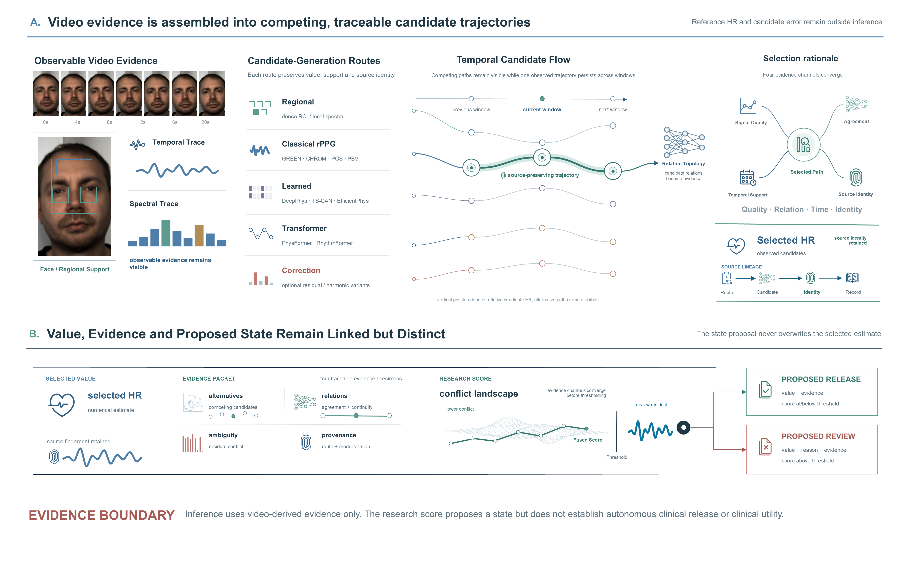
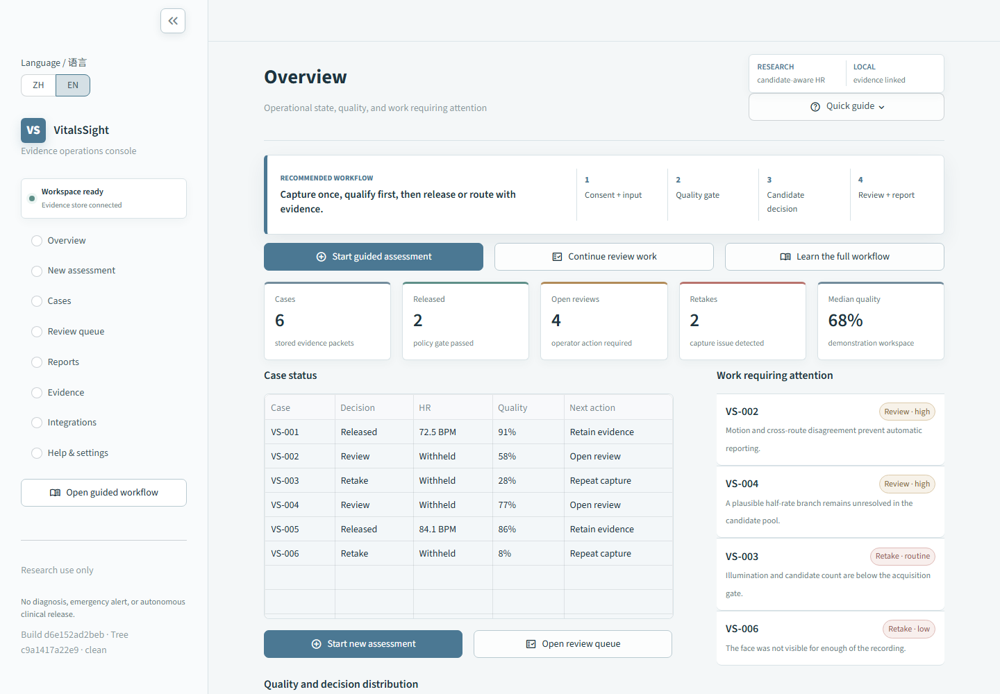

{kind=link}
Construct
Regional, classical, learned, transformer and optional correction routes contribute observed hypotheses with retained source identity.
Camera-based physiological measurement research
A candidate-aware framework and auditable output contract for contactless heart-rate monitoring
Competing pulse hypotheses remain visible until relation-aware selection. The selected heart rate, its evidence packet and the proposed release or review state remain linked but distinct.
Author manuscript available. Not peer reviewed. Research use only.
Study overview
Remote photoplethysmography pipelines commonly collapse a video window into one heart rate even when several hypotheses remain plausible. This makes it difficult to distinguish candidate absence from an arbitration error or an unresolved source conflict.
VitalsSight preserves source identity, ranks observed hypotheses using prediction-time evidence and reports the selected value separately from a proposed release or review state. In the primary subject-disjoint internal protocol, 439 windows from 42 UBFC-rPPG participants were evaluated across model seeds 704, 1704 and 2704. The full selector achieved a window-level MAE of 1.646 ± 0.051 BPM, RMSE of 4.946 ± 0.186 BPM and 96.8 ± 0.0% of estimates within 10 BPM. These values are internal, protocol-bound estimates; the dispersion is across model seeds rather than a participant-level confidence interval, route comparisons are unmatched source audits, and the release analysis did not establish beneficial abstention or calibrated clinical safety.
Method
Regional, classical, learned, transformer and optional correction routes contribute observed hypotheses. Relation-aware selection preserves the winning candidate's source identity while the value, evidence, research score and proposed state remain separate.

Download the editable Figure 1 PowerPoint source. This post-PDF visual revision changes presentation only; the manuscript PDF remains unchanged and hash-verifiable.
Regional, classical, learned, transformer and optional correction routes contribute observed hypotheses with retained source identity.
Candidate-intrinsic evidence is evaluated together with agreement, harmonic structure, temporal support and source relations.
A causal joint path returns one hypothesis that was actually observed instead of synthesizing an untraceable average.
The selected value and evidence packet remain linked to a proposed release or review state without becoming a safety guarantee.
Evidence hierarchy
The primary result is a subject-disjoint internal evaluation. Cross-dataset analyses use protocol-specific units and are interpreted as stress or failure-boundary evidence rather than pooled external validation.
| Dataset / protocol | Unit | Comparator MAE | VitalsSight result | Evidence role |
|---|---|---|---|---|
| UBFC-rPPG primary internal protocol | 42 participants 439 repeated windows |
Not a matched route comparison | 1.646 ± 0.051 BPM MAE 4.946 ± 0.186 BPM RMSE 96.8 ± 0.0% within 10 BPM |
Subject-disjoint internal estimate across three model seeds; subject-equal MAE 1.662 BPM. |
| MCD-rPPG post-exercise / high-HR stress | 6 participant-equal units 60 windows |
24.242 BPM | 17.231 BPM MAE 45.0% coverage; 7.928 BPM released MAE |
Supportive stress evidence, not pooled external validation. |
| rPPG-10 subject-level audit | 26 participant-level units | 10.164 BPM | 7.136 BPM MAE 76.9% coverage; 2.102 BPM released MAE |
Descriptive supportive stress evidence; source map remains pending. |
| SCAMPS-full synthetic boundary | 2,800 synthetic samples | 30.234 BPM | 29.009 BPM MAE 29.015 BPM released MAE; 54.6% error above 10 BPM |
Negative synthetic failure boundary. |
Different datasets use different statistical units and protocol keys. These rows must not be pooled. The release/review score did not establish beneficial abstention, calibrated clinical safety, participant-level risk control or universal external generalisation.
Research software
The reference implementation connects quality qualification, candidate evidence, release/review/retake states, audit records, report exports and an evidence-bounded local assistant.

Finite conformance replay: seven hash-locked MCD-rPPG fixtures, 21 backend/API executions, exactly 3 release, 15 review and 3 retake states, 21 linked reports, 50 unit tests and 83 desktop/mobile browser assertions. This was a curated software-path replay, not an independent accuracy cohort, full supervised/deep end-to-end validation or clinical-workflow evidence.
Availability
The public repository contains the research implementation, protocol descriptors, aggregate manuscript metrics and an extended audit package. It intentionally excludes raw videos, identifiable participant frames, provider-controlled labels, credentials and private execution logs.
https://github.com/ShikiRyo1/VitalsSight-candidate-aware-rPPG
Citation
The current PDF is an author-final manuscript and is not represented as peer reviewed or formally published. A journal citation and permanent manuscript identifier will be added only after publication. For software analyses, cite the repository URL and exact commit SHA rather than the mutable project page alone.
{kind=link}